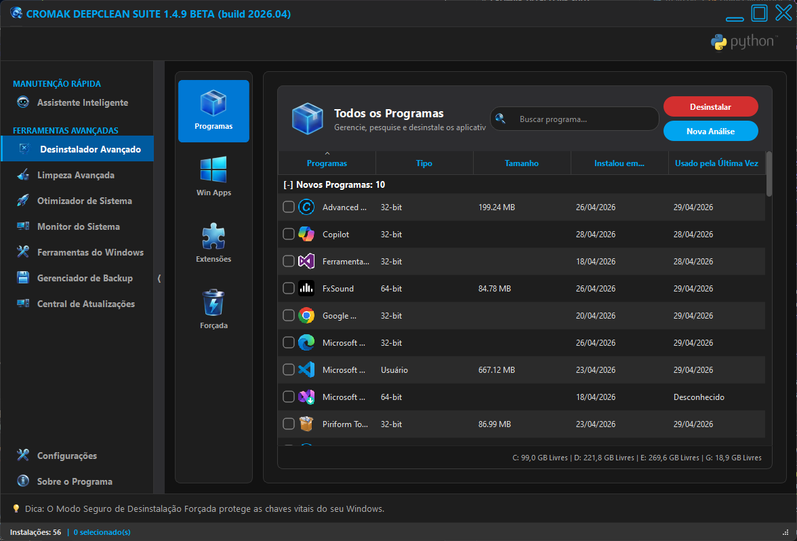
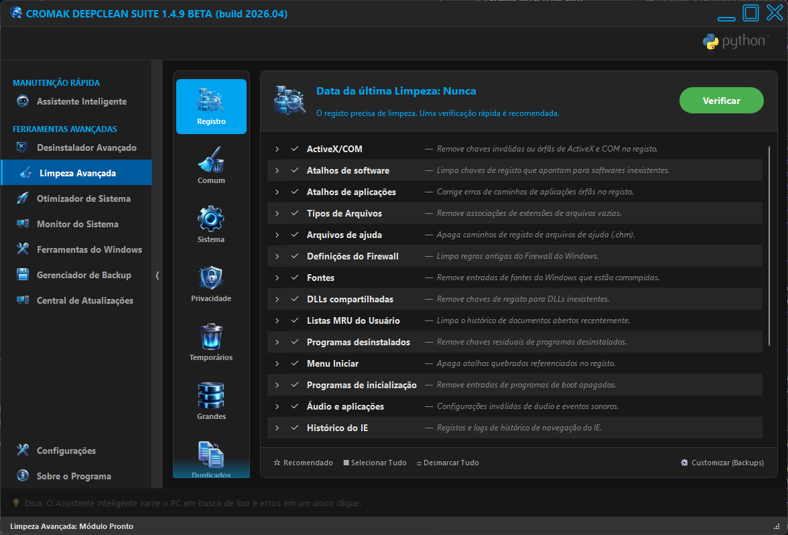

Cromak DeepClean Suite
Otimização brutal para recuperar a performance original do seu PC.
A solução definitiva para acelerar o tempo de boot, gerenciar tarefas em segundo plano e expurgar falhas do registro. Um motor C++ robusto operando de forma invisível no seu Windows.

Explore o Motor por Dentro
Clique nas imagens para expandir e conhecer os painéis da nossa suíte.
Assistente Inteligente
O coração do sistema. Execute uma verificação rápida de integridade e segurança do seu computador com apenas um clique.

Desinstalador "Sniper"
Lista todos os programas instalados. Nosso motor independente caça e oblitera rastros e chaves de registro esquecidas.

Limpeza Avançada
Expurgo cirúrgico de lixo eletrônico, chaves órfãs do Registro e arquivos temporários que sobrecarregam o sistema.

Otimizador de Boot
Monitore o tempo do seu último boot. Oculte ou atrase serviços desnecessários para uma inicialização ultrarrápida.

Monitor de Hardware
Acompanhe em tempo real o uso e as especificações da sua CPU, Memória RAM, GPU e Placa Mãe com leitura nativa.

Central de Atualizações
Rastreia e permite instalar pacotes críticos e novas versões de drivers de hardware diretamente pelo painel.
Módulos Estruturais
Bootup Shield
Otimize a inicialização desativando itens desnecessários e reduzindo o tempo de carregamento.
Recuperação de RAM
Libere memória instantaneamente e automatize a purga ativa para evitar travamentos.
Game Booster
Estrangula processos em 2º plano e força prioridade total no Kernel para execução de jogos pesados.
Limpador de Registro
Motor que expurga chaves órfãs, reescreve colmeias e gera Clones (.hiv) como backup de segurança.
Destruidor de Dados
Ferramenta "Shredder" nível militar que sobrescreve arquivos confidenciais impedindo a recuperação.
Desfragmentador MFT
Motor C++ de baixo nível que aplica cura atômica em HDDs e dispara o protocolo TRIM em SSDs.
Monitor de Performance
Acompanhe em tempo real a utilização de CPU e RAM com uma interface gráfica moderna e intuitiva.
Desinstalador "Sniper"
Motor independente que caça e oblitera rastros e chaves de registro de programas teimosos do sistema.
Central de Atualizações
Rastreia e instala as últimas versões de drivers, softwares de terceiros e pacotes do Windows Update.
Assistente Inteligente
Realize um "One-Click Scan" para verificar a saúde geral do computador e engatilhar otimizações automáticas.
Gerenciador de Backup
Central de controle de segurança dedicada para criar Pontos de Restauração e Clones do Registro localmente.
Diagnóstico Inteligente
Ferramenta de análise profunda projetada para auditar a saúde do núcleo e resolver conflitos estruturais do Windows.
Veja o Motor em Ação
Acompanhe o DeepClean Suite operando em tempo real, expurgando falhas e liberando a verdadeira performance do Windows.
Requisitos do Sistema
Sistema Operacional
Windows 10/11 (ou superior. x64)
Processador
Dual Core (2.0 GHz ou superior)
Memória RAM
4 GB Mínimo (Recomendado 8 GB)
Armazenamento
100 MB de espaço livre em disco
Privilégios do Sistema
UAC Nativo (Auto-Elevação Integrada)
Conexão com a Internet
Necessária apenas para validar a licença PRO
Perguntas Frequentes
O DeepClean oferece proteção antes de limpezas profundas?
Sim. Como medida de segurança, o sistema recomenda fortemente criar um Clone do Registro (.hiv). Se uma modificação extrema quebrar a inicialização do Windows, você poderá utilizar a Tela de Restauração para restaurar este clone e reviver o PC na hora (leia o manual).
O que o Cromak Sentinel faz no meu computador?
O componente nativo "cbsservice.exe" atua como um serviço guardião em segundo plano que orquestra o Cromak Sentinel, funcionando como um EDR de proteção em tempo real.
Como o desinstalador garante que nenhum arquivo fique para trás?
A nossa ferramenta vai além dos desinstaladores comuns. O software utiliza o motor "Sniper", projetado para obliterar rastros de programas ocultos varrendo diretamente a partir do caminho do executável após a desinstalação padrão.